Computer controlled cutting
This week assignments will be a design cut on vinyl, laser cutting test and a parametric kit are the objectives.
The machines used for this task will be a Roland GX-24 (vinyl cut) and a Trotec Speedy400. Details about each machine can be found here for Roland and here for Trotec. I'll need a AI format image to use the vinyl cutter and a DXF image for laser cutting.
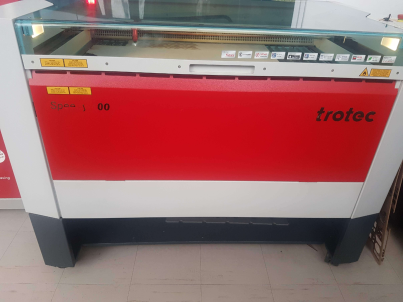
Vinyl Cutter
It's been a couple of years since I've been playing videogames by the nickname "Juggler". Always imagine them as an harlequinn juggling all kind of things: from balloon to knives (thanks to Hollywood). I started this week making a minimalistic logo for myself, representing this "Juggler" in my head.
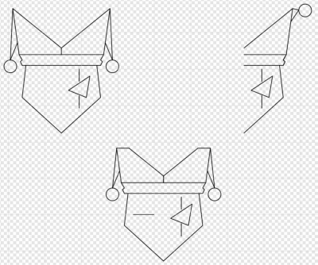
First I need to export my design to AI file. Using an online converter, I turn my JPG file into a AI format. I load the file on the software and send print. On menu I set roll as material presentation.
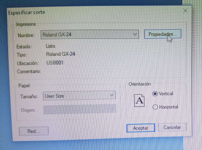
When setting the vinyl cutter, I place the roll on sensors and secure it. Unroll a little bit to avoid tension and start. It was really quick and finished my work like in 2 min.
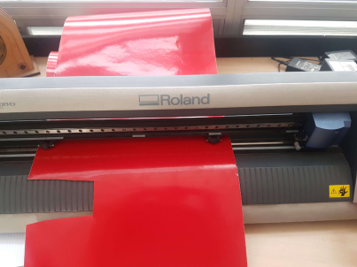
Using tape, I covered the zone where my cut is, trying to pull it from the paper. Carefully I pull and got all vinyl pieces needed on tape. Next I place the tape on my laptop and voila! the job is really nice!.
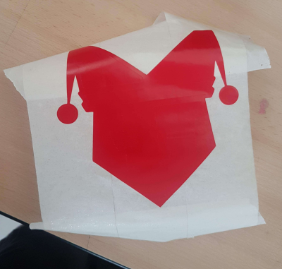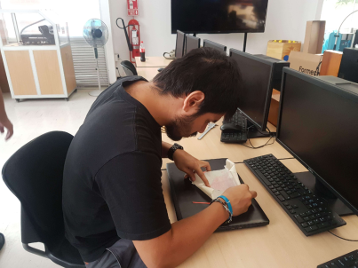

Laser cut
My personal assignment was developed using Fusion 360. It is a triangular shape with 2 side and 1 central slot. Also an angular shape to connect to other shapes.
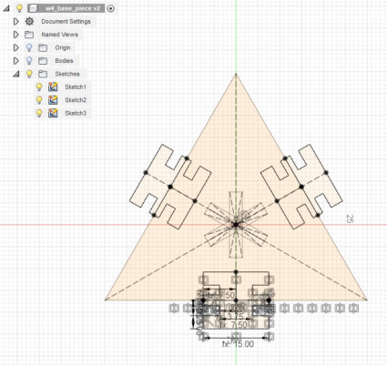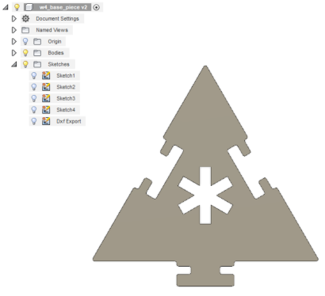
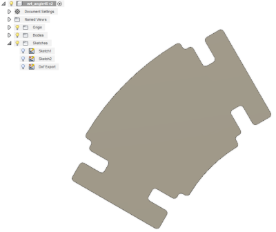
When designed, all dimension are related to the width of the outter tab (15mm in this case). Offset addition to the outter tab was 0.15 mm.
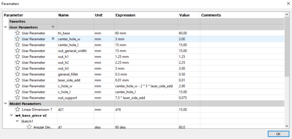
One the design was finished, I exported the shapes to a DXF file and load it to Corel Draw. I place all pieces and change line color to red (Trotec software recon red as a cutting line). Once al pieces are placed on file, I selected and send "print" (similar to other programs).
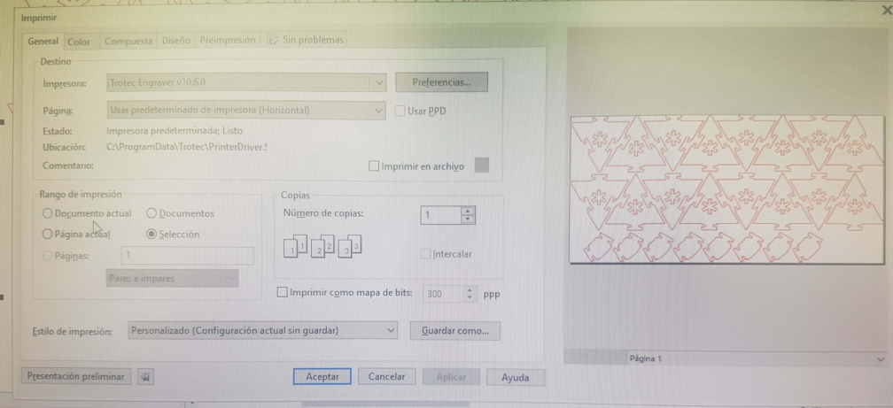
While the corel file is been sent to the Trotec softare, I set the laser cut:
- Turning on. Wait to the work tray goes down.
- Up work tray.
- Move laser to where is going to be the origin point.
- Using the level tool, set laser gap to the material.
- Connect laser to PC to retrieve the origin point.
Back on software, once we got the origin point from the laser we add our cutting job from the list. When ready, it starts (by pressing the play button).
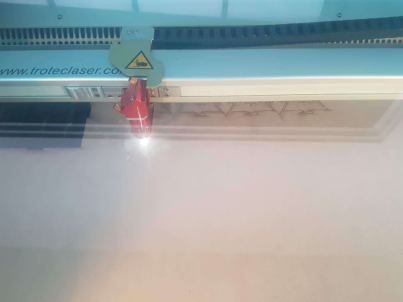
This looks like when finished.
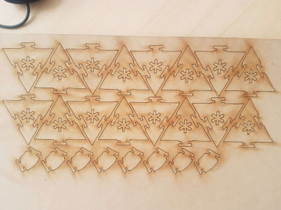
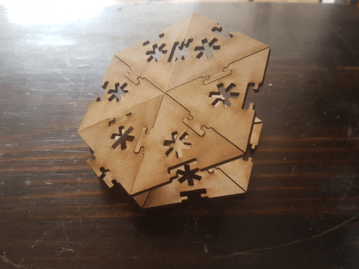
Downloads
Here are the files for this week:
{kind=link}